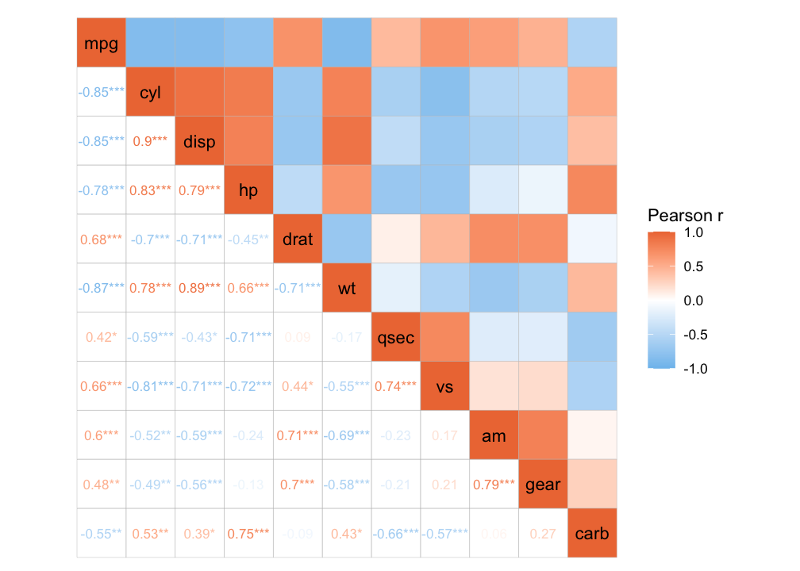
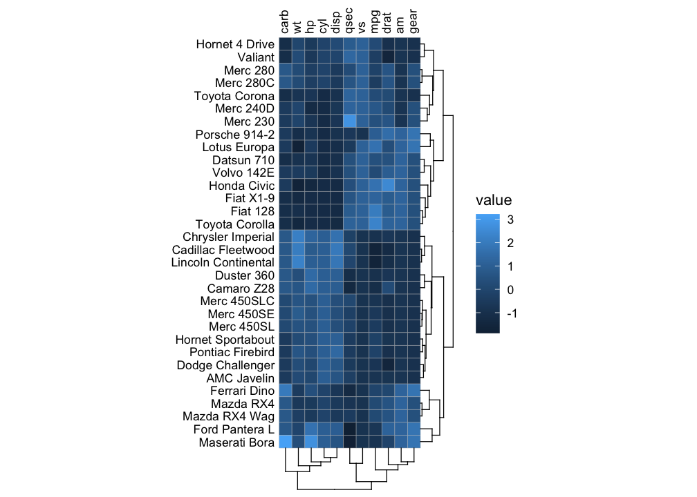

ggcorrheatmap is a convenient package for generating correlation heatmaps made with ggplot2, with support for triangular layouts, clustering and annotation. As the output is a ggplot2 object you can further customise the appearance using familiar ggplot2 functions. Besides correlation heatmaps, there is also support for making general heatmaps.
Installation
You can install ggcorrheatmap from CRAN using:
install.packages("ggcorrheatmap")Or you can install the development version from GitHub with:
# install.packages("devtools")
devtools::install_github("leod123/ggcorrheatmap")Example
Below is an example of how to generate a correlation heatmap with clustered rows and columns and row annotation, using a triangular layout that excludes redundant cells.
library(ggcorrheatmap)
set.seed(123)
# Make a correlation heatmap with a triangular layout, annotations and clustering
row_annot <- data.frame(.names = colnames(mtcars),
annot1 = sample(letters[1:3], ncol(mtcars), TRUE),
annot2 = rnorm(ncol(mtcars)))
ggcorrhm(mtcars, layout = "bottomright",
cluster_rows = TRUE, cluster_cols = TRUE,
show_dend_rows = FALSE, annot_rows_df = row_annot)![A correlation heatmap showing the correlations between the columns of the mtcars dataset. Only the bottom triangle of the symmetric matrix is displayed, oriented as a bottom right triangle. The colour scale goes from blue at -1 to white at 0 and red at 1. The names of the columns are displayed on the diagonal. Below the heatmap is a dendrogram showing that the data has been clustered. Along the right side two columns are placed, showing one discrete and one continuous annotation (called annot1 and annot2, respectively). Three legends are found to the right of the plot, one for the main heatmap scale and one for each annotation.](reference/figures/README-example1-1.png)
Or a mixed layout that displays different things in the different triangles.
# With correlation values and p-values
ggcorrhm(mtcars, layout = c("topright", "bottomleft"),
cell_labels = c(FALSE, TRUE), p_values = c(FALSE, TRUE))
It is also possible to make a normal heatmap, for a more flexible output.
